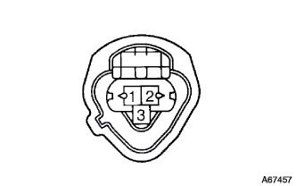

DTC P0115/22 Water temperature sensor system |
| DTC No. | DTC detection conditions
| Inspection site |
| P0115/22 |
|
|

| Step 1 | Tascan data reading (engine cooling water temperature) |
Turn on the ignition switch and read the engine cooling water temperature displayed on Tascan while stopping the engine.
| A | B | C |
| -40 ° C | 140 ° C | Same as actual water temperature |
|
| ||||
|
| ||||
| A | |
| Step 2 | Tascan data reading (wire harness disconnection inspection) |
E.F.I. Water Tenpalachia Cut the connector.
|  |
Use the diagnodes check wire No.2 to shorten between the E.F.I. Wota Tenparachiya vehicle connector 2 (THW) ← → 1 (E2) terminals.
Turn on the ignition switch.
Read the engine cooling water temperature displayed in Tascan.
|
| ||||
| NG | |
| Step 3 | Tascan Data Read (Internal disconnection inspection) |
Using a Toyota Electrical Tester, the connector A19 (THW) terminal of the engine control compilation is short -circuit between the terminals ← → A28 (E2).reference).
Turn on the ignition switch.
Read the engine cooling water temperature displayed in Tascan.
|
| ||||
| NG | ||
| ||
| Step 4 | Tascan data reading (wire harness short circuit inspection) |
E.F.I. Water Tenpalachia Cut the connector.
Turn on the ignition switch.
Read the engine cooling water temperature displayed in Tascan.
|
| ||||
| NG | |
| Step 5 | Wire harness or connector inspection (engine controlled compilationa -E.F.I. |
Cut the connector A and E.F.I. Wota Tempala connectors of the engine control compilation.
 |
Using Toyota Electrical Testers, the connector on the vehicle side of the engine control compilation is checked for short circuits between the vehicle connector 2 (THW) of the Wota Tempalachiya (THW) terminal (terminal sequence is the terminal sequence.reference).
|
| ||||
| OK | ||
| ||